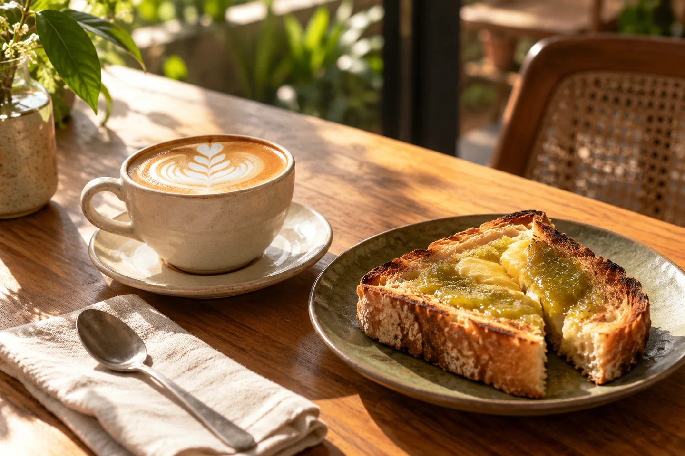
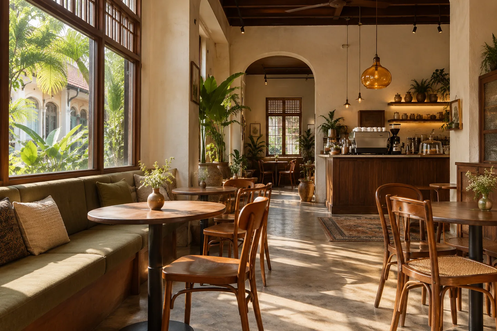

Gula Melaka Latte
Espresso, fresh milk and a little Malaysian sweetness.
COFFEE. COMFORT. A LITTLE SELA.
Good coffee, familiar flavours, and a seat that feels like yours. Take a breather. You're in good company.

FROM OUR LITTLE KITCHEN
Espresso, fresh milk and a little Malaysian sweetness.
Thick sourdough, pandan kaya and a generous slice of butter.
Soft, fragrant and just right with your second cup.

A SPACE BETWEEN THE BUSY BITS
Sela means a pause or an interval. That's the idea behind our little café: a place for the first coffee of the day, a long catch-up, or a quiet moment in between.
Familiar local flavours meet a simple café menu. Nothing rushed. Just something good on the table.
THERE'S A SEAT FOR YOU
See our hours and try the table enquiry experience.